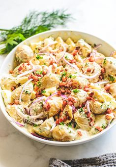

Potato Salad Recipe

Potato Salad Recipe
Ingredients
- Potatoes
- Mayonaise
- Hard-boiled eggs – peeled and chopped
- Sweet onion – diced
- Salt and pepper
Steps
- Start the potatoes in a large pot of cold water and bring them to a boil to ensure even cooking. Make sure to salt the boiling water so the salty flavor gets deep down in the potatoes.
- Next, mix all the dressing ingredients together in a large bowl. Use your favorite mayonnaise as the base.
- Mix the potatoes and the dressing while the potatoes are still warm. Add chopped hard-boiled eggs for richness, celery for crunch, sweet onions for a zippy bite, and fresh chopped dill for a herbaceous punch.
- Finally, potato salad, any potato salad, tastes better on the second day after the flavors have had ample time to mix and mingle.